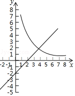

2017年北京市中考数学试题 · 数学解答题 第23题23．（5分）如图，在平面直角坐标系xOy中，函数y= kx （x＞0）的图象与直线y=x﹣2交于点A（3，m）．（1）求k、m的值；（2）已知点P（n，n）（n＞0），过点P作平行于x轴的直线，交直线y=x﹣2于点M，过点P作平行于y轴的直线，交函数y= kx （x＞0）的图象于点N．①当n=1时，判断线段PM与PN的数量关系，并说明理由；②若PN≥PM，结合函数的图象，直接写出n的取值范围．